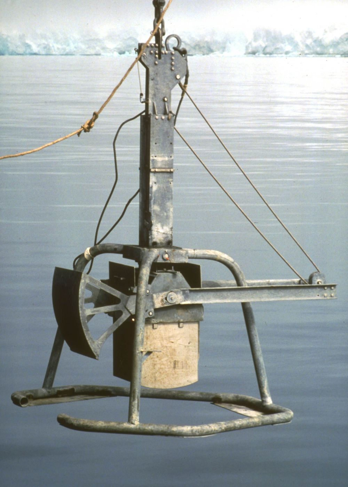
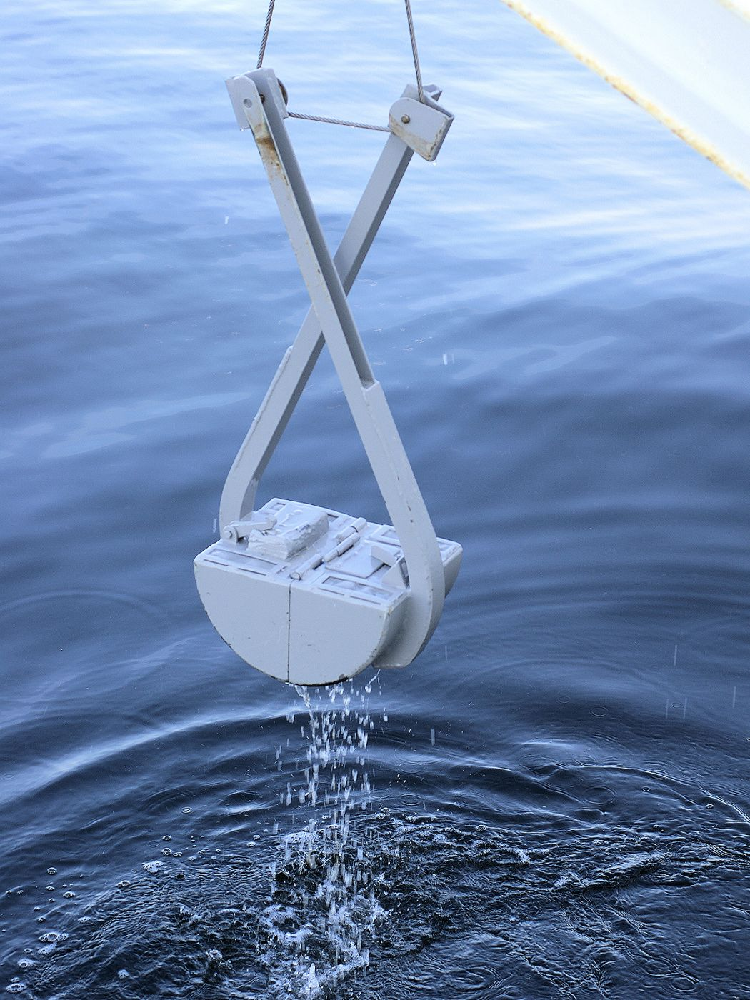
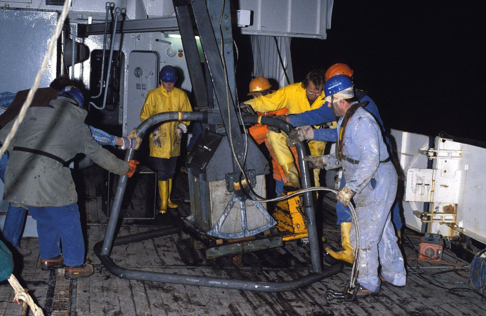

Deniz tabanından yüzey ve bozulmamış numune alımı için grab ve box corer sistemleri.
Ekipman · NumuneZT · 2007'den beri
Deniz tabanından ve göl zemininden numune almak için kullanılan modern grab ve box corer sistemleri, jeoloji, biyoloji ve çevre bilimlerinde kritik öneme sahiptir.

Görsel: Hannes Grobe / AWI · CC BY 2.5 (Wikimedia Commons)

Görsel: Hans Hillewaert · CC BY-SA 4.0 (Wikimedia Commons)
Box Corer Nedir?
Box corer, deniz ve göl tabanındaki yumuşak sedimanlardan bozulmamış numune almak için kullanılan bir deniz jeolojisi ekipmanıdır. Yüzeydeki sedimanı minimum bozulmayla almak için tasarlanmıştır. Özellikle bentik canlılar, jeokimyasal analizler ve sediman tabakalarının incelenmesinde kullanılır.
Yüksek Numune Kalitesi: Yüzey sedimanı ve suyu bozulmadan alınır.
Çeşitli Derinliklerde Kullanım: Okyanuslardan göllere kadar farklı derinliklerde uygulanabilir.
Geniş Numune Alanı: 200 cm² ile 2500 cm² arasında değişen kutu boyutları.
Kolay Taşıma ve Hızlı Numune Alma: Modüler ve değiştirilebilir kutu sistemi.
Grab Sistemleri Nedir?
Grab (mekanik kepçe) sistemleri, deniz tabanından veya göl zemininden sediman ve bentik canlı örnekleri almak için kullanılan, çeneli veya kepçeli mekanik cihazlardır. Van Veen, Ponar ve Young grab gibi farklı tipleri vardır. Özellikle hızlı ve pratik numune alma gerektiren durumlarda tercih edilir.
Farklı Zeminlere Uyum: Sert ve yumuşak zeminlerde kullanılabilir.
Çeşitli Numune Hacmi: 250 cm²'den 2000 cm²'ye kadar farklı hacimlerde örnek alabilir.
Basit ve Dayanıklı Tasarım: Paslanmaz çelikten üretilir, uzun ömürlüdür.
Kolay Kullanım: Tek kişiyle veya vinçle kolayca çalıştırılabilir.

Görsel: Hannes Grobe / AWI · CC BY-SA 2.5 (Wikimedia Commons)